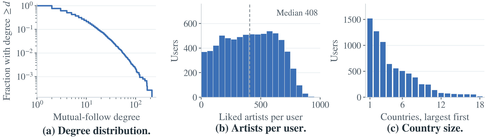
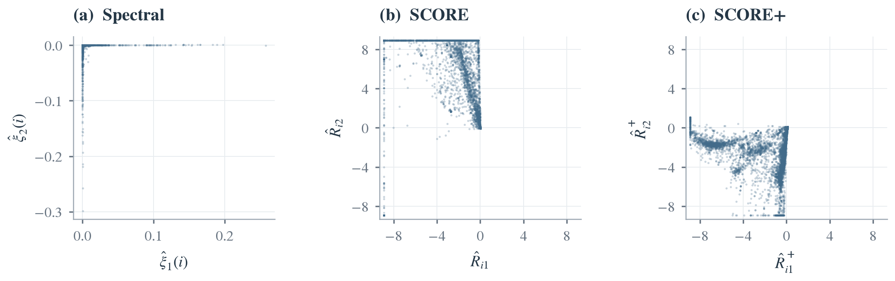

Start with two people
Two people who like the same artists are more likely to follow each other. That is one friendship. The picture on the right is only people. There are no lines yet.
People who like the same music often end up following each other. That is easy to picture for two friends. This page asks the harder version. Once a whole circle has been drawn from follows alone, do the people inside it share more music than people in different circles? The sections below set up that question, show the data, and then walk through the comparison.
Two people who like the same artists are more likely to follow each other. That is one friendship. The picture on the right is only people. There are no lines yet.
A line joins two people who follow each other. Their music is not used here. Every circle later in the page is drawn from these lines.
The amber group is one circle. We marked it from the follows. Next we ask whether the people in that circle also share music.
Circle means a group built from follows. Similar means shared artists. The sentence asks whether the inside is higher on average. It does not ask whether every person matches their neighbors.
The link on the right is the public file we started from. Read the note under it. It says what the snapshot contains, and why those records match the question.
Panel (a) is the number of mutual follows. Most users have only a few. The median is 4, and the highest is 214. Only 0.098% of possible pairs are tied.
Panel (b) is the length of the artist list. The median is 408. A like means the user marked that artist. It is not a count of plays. Users with more follows tend to list more artists. The Spearman correlation is 0.246.
Panel (c) is country size, largest first. The three largest countries hold 51.9% of the users. Each artist in this figure is liked by at least 97 users.
A user with an empty artist list has no music to compare, so we drop 173 users. That leaves 7,451 users and 27,048 edges.
SCORE needs the leading eigenvector to be strictly positive, so we keep the largest connected component and drop 20 more users. The figure describes this sample: 7,431 users, 27,045 edges, 7,842 artists, and 18 countries.
Dataset
LastFM Asia social network, SNAPRozemberczki and Sarkar, 2020. A March 2020 snapshot from the public API. Each user has mutual follows, a list of liked artists, and an anonymized country. If two users follow each other, that pair is a tie. The published file has 7,624 users and 27,806 mutual follows.
The same users carry both records, so the file matches the question. Follows can draw the circles. Artist lists can compare the music afterward. Country stays out of the grouping and is kept for a separate check.

Data processing
| Step | Users | Edges | Artists | Countries |
|---|---|---|---|---|
| Published file | 7,624 | 27,806 | — | — |
| Drop 173 users with an empty artist list | 7,451 | 27,048 | — | — |
| Drop 20 users outside the largest connected component | 7,431 | 27,045 | 7,842 | 18 |
The question is already fixed. These four methods are how we study it. Each one uses only the follow network, and each one returns 11 circles. The dots are the same 7,431 people. Press a station, or use the previous and next buttons. The people stay put. The colors change.
How to read the map. Dots are users and lines are mutual follows. Positions come from an igraph Fruchterman–Reingold layout of the follow network. All four methods share this map; colors show their different groups. These display positions are separate from the coordinates used for clustering. Nearness does not directly measure music similarity.
Spectral reads the mutual follows directly and does not adjust for who is popular. On this network almost everyone lands in one circle. Ten small circles gather many of the most-followed users.
SCORE divides later eigenvector coordinates by the first one. This aims to reduce differences caused by how many follows a user has. Tiny denominators can still create extreme ratios, so we limit them by clipping. The circles become more even.
SCORE+ first gives less weight to follows that touch users with many connections. It then computes new eigenvectors, weights them by their eigenvalues, and takes ratios. We also clip these ratios. The circles are fairly even, and they are not the same circles.
Louvain seeks groups with more internal follows than a degree-based benchmark predicts. It moves users between groups to raise modularity, then treats each group as a node and repeats. It uses no eigenvector coordinates. Its circles line up most closely with country.
Louvain does not take 11 as an input. We choose resolution γ = 0.25 using the network only; the final run returns 11 groups.
Each user starts at a random point. Connected users attract each other, while nearby users repel. The algorithm updates their positions over 1,500 iterations using seed 236. We reuse the saved positions for every method.
The distance is the Euclidean distance between two current positions on the screen. It changes as the points move. The adjacency matrix A tells us which users are connected; it does not supply a physical distance.
rij = √[(xi − xj)² + (yi − yj)²]
In igraph’s scaling, the attraction magnitude is Aijrij² and the repulsion magnitude is 1/rij. Aij is 1 for a mutual follow and 0 otherwise. All edges have equal weight. These are drawing rules, not measured social forces. For this large network, igraph uses a grid approximation to calculate repulsion among nearby points.
Music, country, and community labels do not determine the positions. The axes have no real-world units. Two nearby dots need not share a direct tie, the same music, or the same community.
Modularity compares edges inside groups with a random-network benchmark that allows users with more connections to have more edges. Louvain searches for groups with more internal edges than this benchmark predicts.
The search stops when the improvement is too small. It is greedy, so it need not find the highest possible modularity, and the random visit order can affect the result.
Resolution γ controls the grouping scale. Larger values tend to favor smaller groups. We test ten resolutions from 0.05 to 1, using seeds 236 through 240. We choose γ = 0.25 because its median group count is closest to the graph-selected K = 11. The final partition uses seed 236. Music and country play no part in this choice.
These plots show the same users in method coordinates. They are different from the shared network map above. No communities are fitted and no K is selected to draw these views.

Clipping means setting bounds. Both ratio plots limit values to ±log(n) = ±8.91. A value of 12 or 100 becomes 8.91; −20 becomes −8.91. Every user stays, but differences beyond the bounds are lost. This creates the rows of points along the boundaries. Adding clipping to SCORE+ is our implementation choice.
The full clustering uses 10 coordinates for SCORE and 11 for SCORE+, not just these two. SCORE+ can also keep an extra direction under its weak-signal rule; these views do not illustrate that choice. A more spread-out plot alone does not show that a method is better.
Make a guess on the right, then press the button to see the four methods. The percentage is how much higher music similarity is inside a circle than between circles.
Two people who follow each other score 0.149. Two random people score 0.063. A circle is larger than that. It includes people who never followed each other. The slider is about the whole circle.
+10% means you think the inside is 10% more similar than the outside. +0% means the two averages match. The four answers stay hidden until you press the button.
One mark appears for each method. +36% means the inside average is 36% higher than the outside average. The score is Jaccard: shared artists divided by the artists either person likes.
Each bar is one circle, largest first. The height is the average music similarity inside that circle. The white mark is the average similarity between that circle and the others. A bar above its mark means the inside is higher.
The first bar is the largest circle, 6,830 people. It sits below the white mark. The tall bars are the small circles.
The bars switch to SCORE. Look at the white mark on each bar. The line under the chart says how many of the 11 bars sit above it.
SCORE+ draws a different set of circles, so the bars change. Read each bar against its own white mark. The line under the chart gives the inside average and the between average.
The bars are now Louvain’s circles. A bar above its white mark means people inside that circle are more similar than people outside it.
Press shuffle to swap people's whole playlists, while the communities stay fixed. Each press adds one result to the pile. If communities and music had nothing to do with each other, the real value (blue line) would sit inside the pile. These are the real shuffles from our analysis.
The rule button changes. Playlists move among people with a similar number of friends and artists. Press Shuffle. The blue line is the real gap. It should stay to the right of the pile.
The pile moves right, because country is now left inside the shuffled data. The gap that remains cannot come from country alone. This is 199 shuffles.
The strictest swap: same country, and similar friend and artist counts. Shuffle again. The blue line is still the real value for the station selected above.
There are two fair ways to average. Give every community the same say, or give every pair of users the same say. Slide between them.
The fader sits at the left. This is T_eq. Spectral's small groups get as much say as the giant one, so Spectral looks strongly positive.
The fader moves. Watch Spectral's point travel toward zero. The bar underneath shows how much say the largest community is getting.
This is T_pair. Spectral crosses below zero. SCORE, SCORE+, and Louvain stay positive. You can still drag the fader yourself.
The two ends are our two real statistics. The points between them come from raising the weights to a power, and are there to show the movement.
Spectral gives each user coordinates. A popular user gets longer coordinates, even in the same community. SCORE divides by the first coordinate, so the popularity cancels. Drag the slider to make Bea more popular. This is a small made-up example.
The slider is at 1. Ana and Bea are in the same community, so they sit together in both pictures. Cal is in the other community.
The slider moves. On the left, Bea's coordinates get longer, so she leaves Ana. On the right, the ratio does not move, so SCORE still sees them together.
At the top of the slider, Bea is closer to Cal than to Ana in the left picture. Their ratio on the right is unchanged.
LastFM makes this harder. The first coordinate has 79.7% of its squared mass on just 50 users, so most people have tiny denominators and 39.3% of SCORE's ratios go past our clipping limit. SCORE+ first scales down the links of popular users. That drops the first number to 55.5% and the second to 7.2%. It helps, but it does not remove the problem.
| Method | How it handles popularity | Settings |
|---|---|---|
| Spectral | It does not correct for it. | K = 11 |
| SCORE | Divides eigenvectors by the first one. | K = 11, clipped to ±log n |
| SCORE+ | Also regularizes the network first. | K = 11, τ = mean degree = 7.28, 12 eigenvectors, clipped to ±log n |
| Louvain | Builds it into modularity. Uses no eigenvectors. | Resolution γ = 0.25 |